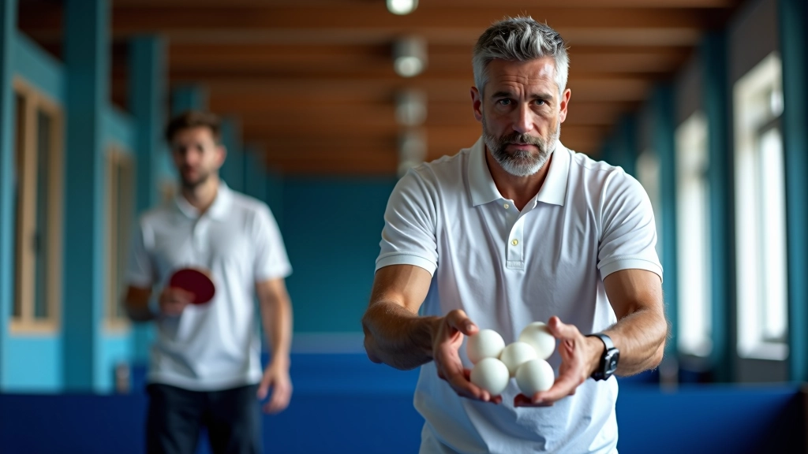
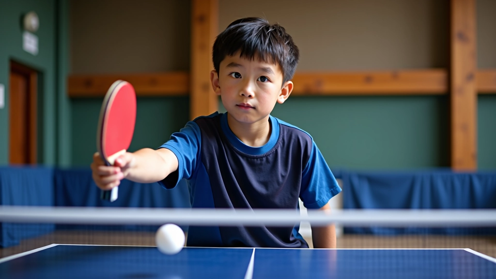
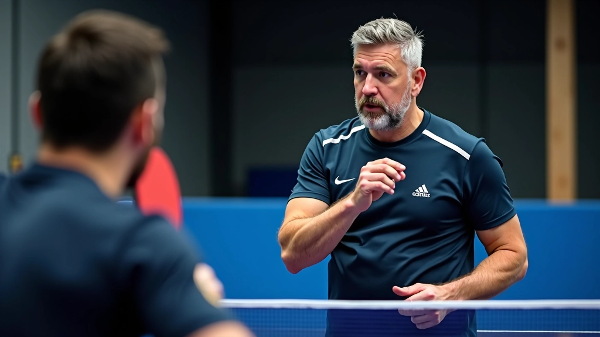

تقنيات الضربة الأمامية المتقدمة مع التغذية المتعددة
تعلم كيفية تحسين دقة ضربتك الأمامية باستخدام تمارين التغذية المتعددة بالكرات والتقنيات المتقدمة.
دليل شامل لفهم كيفية استخدام تمارين التغذية المتعددة لتطوير ردود الأفعال والسرعة في اللعب


كتبه
فريق التحرير والمحتوى
كتبه فريق درايف تايبل التحريري، متخصص في تقديم تمارين عملية وسهلة التطبيق لتنس الطاولة.
تمارين التغذية المتعددة بالكرات هي أسلوب تدريبي فعال جداً، وفيه يقوم المدرب أو لاعب متقدم بإرسال عدة كرات متتالية للاعب المتدرب. كل كرة تأتي بسرعة مختلفة أو من زاوية مختلفة، مما يجبر اللاعب على التكيف السريع.
الحقيقة أنها تحاكي مواقف اللعب الحقيقي أكتر ما تحاكيه التمارين البطيئة. في المباراة، لا تأتي الكرات بنفس السرعة والزاوية دائماً. لذا هذا النوع من التدريب يطور ردود الأفعال والمرونة الحركية بشكل سريع.

أول حاجة، هذه التمارين تطور السرعة الحركية. اللاعب لازم يتحرك بسرعة عشان يرد على كل كرة. بعد 4 أو 5 أسابيع من التدريب المنتظم، تلاحظ تحسن واضح في الحركة والسرعة.
ثاني حاجة، ردود الأفعال تصير أسرع. الكرات تيجي بأسرع من المعتاد، فاللاعب يضطر يتعلم يتنبأ بمسار الكرة ويستجيب في وقت أقصر. هذا فيه علاقة مباشرة بالأداء في المباراة.
وثالث حاجة، التركيز يتحسن. لما تركز على عدة كرات متتالية، عقلك يشتغل بمستوى أعلى. بعدين لما تلعب مباراة عادية، تحس إن المباراة بطيئة نسبياً.
ملاحظة مهمة: هذا الدليل مخصص للأغراض التعليمية فقط. قبل البدء بأي برنامج تدريبي جديد، تأكد من استشارة مدرب متخصص. كل لاعب له احتياجات مختلفة، والتمارين قد تختلف حسب المستوى البدني والعمر والخبرة السابقة.
لما تبدأ تتعلم هذه التمارين، لازم تركز على النقاط الأساسية. أول شيء، الوقفة الجيدة. اللاعب لازم يكون في وضع متوازن دايماً، بحيث يقدر يتحرك لأي اتجاه بسرعة.
ثاني حاجة، المسافة من الطاولة. لما تكون بعيد شوية من الطاولة، تقدر تشوف الكرة أحسن وتتحرك بسهولة أكتر. البدايات تكون بمسافة متر تقريباً من الطاولة.
ثالث حاجة، المدرب لازم يبدأ بسرعة قليلة. الكرات الأولى تكون بسرعة معتدلة، بعدين تزداد التدريجياً. هذا يساعد اللاعب يتعود على الحركة والإيقاع.
رابع حاجة، التركيز على الضربة الصحيحة. حتى لو الكرة سريعة، الضربة لازم تكون صحيحة من حيث الحركة والموقع. ما نركز على السرعة على حساب التقنية.

تعلم كيفية تحسين دقة ضربتك الأمامية باستخدام تمارين التغذية المتعددة بالكرات والتقنيات المتقدمة.
برنامج تدريبي متخصص يركز على تحسين السرعة والتوازن والحركة الجانبية باستخدام تمارين التغذية.

استراتيجيات فعالة لتنظيم جلسات تدريب جماعية باستخدام تمارين التغذية المتعددة وتطوير المستوى.

المرحلة الأولى من التدريب، تركيز على الأساسيات. الكرات تيجي بسرعة منخفضة، والمسافات بين الكرات تكون كافية. المهم أن اللاعب يقدر يرد على كل كرة بطريقة صحيحة.
المرحلة الثانية، بعد أسبوعين أو ثلاثة أسابيع، تزداد السرعة قليلاً. الكرات تصير أسرع بشوية، والفترات بينها تقصر. اللاعب لازم يكون ركز على الحركة السريعة والتوازن.
المرحلة الثالثة، بعد شهر تقريباً، تصير التمارين أصعب شوية. المدرب يرسل كرات بزوايا مختلفة وسرعات متنوعة. هنا اللاعب يتعلم يتكيف مع الأوضاع المختلفة.
المرحلة الرابعة والأخيرة، التمارين تصير شبه حقيقية. الكرات تيجي كأنها في مباراة فعلية، والمدرب ما يعطي وقت راحة كتير. بعد هذه المرحلة، اللاعب يكون جاهز للعب الحقيقي.
تمارين التغذية المتعددة بالكرات هي من أفضل الطرق لتطوير مهارات تنس الطاولة بسرعة. ما نقول إنها حل سحري، بس فعلاً بتعطي نتائج ملموسة في فترة قصيرة نسبياً.
المهم أن تبدأ بالأساسيات، تركز على التقنية الصحيحة، وتتقدم تدريجياً. كل لاعب له سرعة تعلم مختلفة، فما فيش مشكلة لو استغرقت أكتر من الوقت المتوقع. الأهم الاستمرار والمثابرة.
ابحث عن مدرب متخصص في منطقتك واسأل عن جلسات تدريب التغذية المتعددة. الجلسات الأولى قد تكون صعبة، بس بعدها مباشرة تلاحظ الفرق.
تواصل معنا